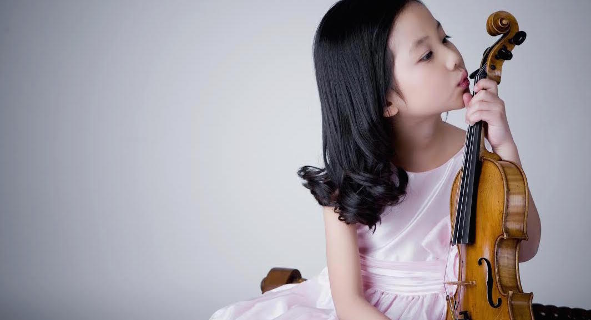

- 
ABOUT US
Amadeus Music School was founded in 1992 by graduates of The Juilliard School dedicated to providing the best music education for children.. From the start, our goal has been to provide the finest quality music education programs to the community. Combined with professional management and outstanding faculty, the continuous, high-level achievements of our students have enabled Amadeus to become a top choice for music education.
Amadeus currently operates three locations in Queens, New York and has taught over 500 students in the musical arts. Our school is one of the largest and most reputable music schools in Queens and is highly regarded within the field of music education for children.
Many of our students have been accepted into the pre-college programs at the Juilliard School and the Manhattan School of Music, and many more have won prominent competitions such as the New York Music Competition, the Heritage Young Artist Competition and the Associated Music Teacher League Competition. Our students regularly excel at NYSSMA and the Royal Music Exam and have impressed audiences at prestigious venues from Carnegie Hall to Lincoln Center.
Praise by Gannett Newspaper music critic Dr. Francis Brancaleone further speaks to the reasons why Amadeus remains a top choice for music education, drawing students from New York, New Jersey, Connecticut and Pennsylvania: "[Students from Amadeus] played with poise and artistry.... It was obvious that they had received the highest level of instruction in all areas of musicianship and technique".